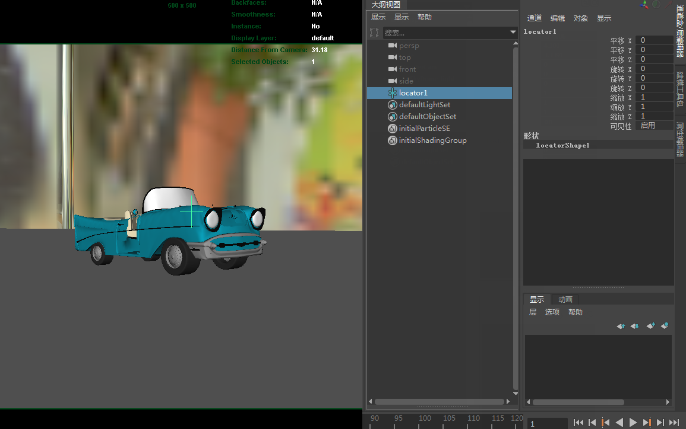
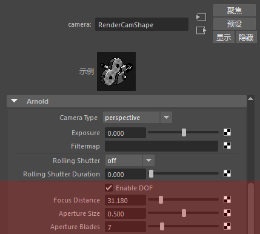
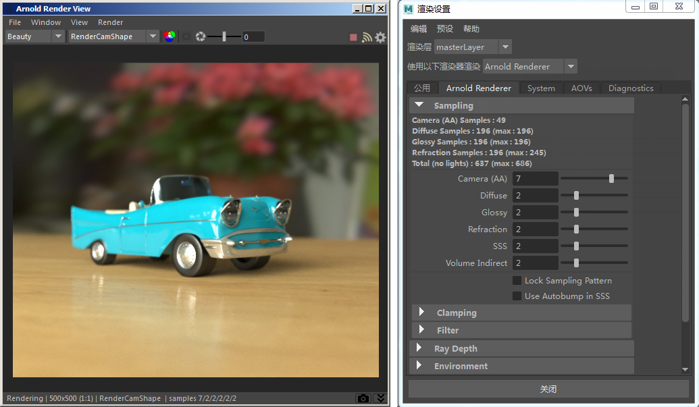

创建定位器并将其放置到所需的聚焦距离

将“聚焦距离”(Focus Distance)设置为与定位器的“与摄影机的距离”(Distance from Camera)相同
现在，我们已完成对场景的测试渲染。下面将增加质量设置。首先，选择 _skydome_light_。在属性编辑器中，将“采样数”(Samples)*增加到 3。这将增加场景中的阴影采样数，从而有效平滑任何阴影噪波。数值越大，结果越精细。但是，您应当注意，不要将此值增加得过大，否则渲染时间将显著增加。如果模型上出现噪波而非阴影，您可能需要在“渲染设置”(Render Settings)中增加 *diffuse_samples 的数量。尝试将其增加到 3。
对景深、照明和着色都感到满意后，我们开始最终渲染。打开“渲染设置”(Render Settings)窗口，然后单击“Arnold”选项卡。默认情况下，您应该会看到“摄影机 AA 采样数”(Camera AA Samples)设置为 3。这对于测试渲染已经足够，但对于最终渲染，我们需要增加此值。根据场景中的景深量，您可能需要将此值增加到 7 或以上。通过渲染摄影机进行渲染即可完成操作。

“渲染设置”(Render Settings)中的最终 AA 采样数设置为 7
本教程到此结束。